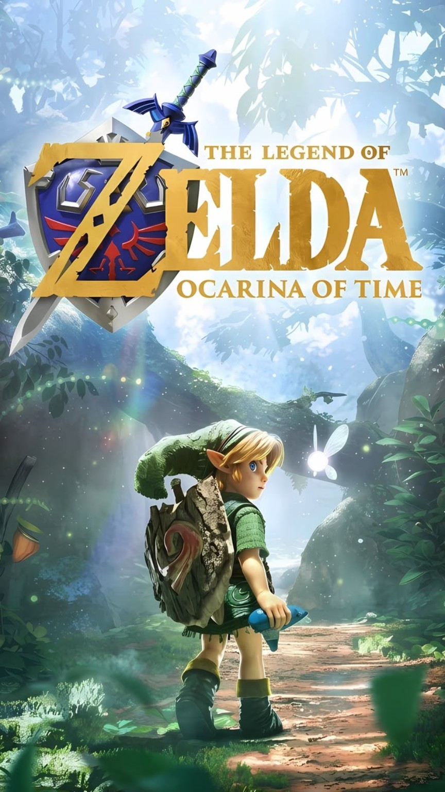

Una aventura legendaria
LUCA
¡10 AÑOS!
Has sido elegido para una aventura legendaria.
¡Acompáñame a celebrar mi cumpleaños!
La aventura comienza
Sábado 5 de
diciembre
2026 · 3:00 p. m.
El reino donde nos reuniremos
Terraza del Coto Alpes / Everest
Fraccionamiento Colinas de Tonalá, Jalisco
¡Te espero, aventurero!